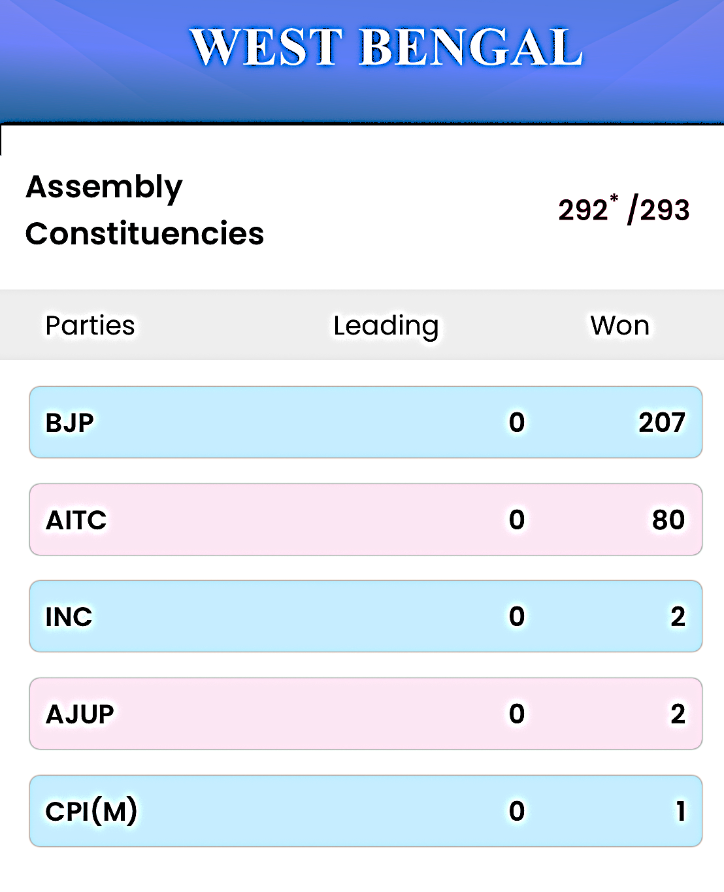
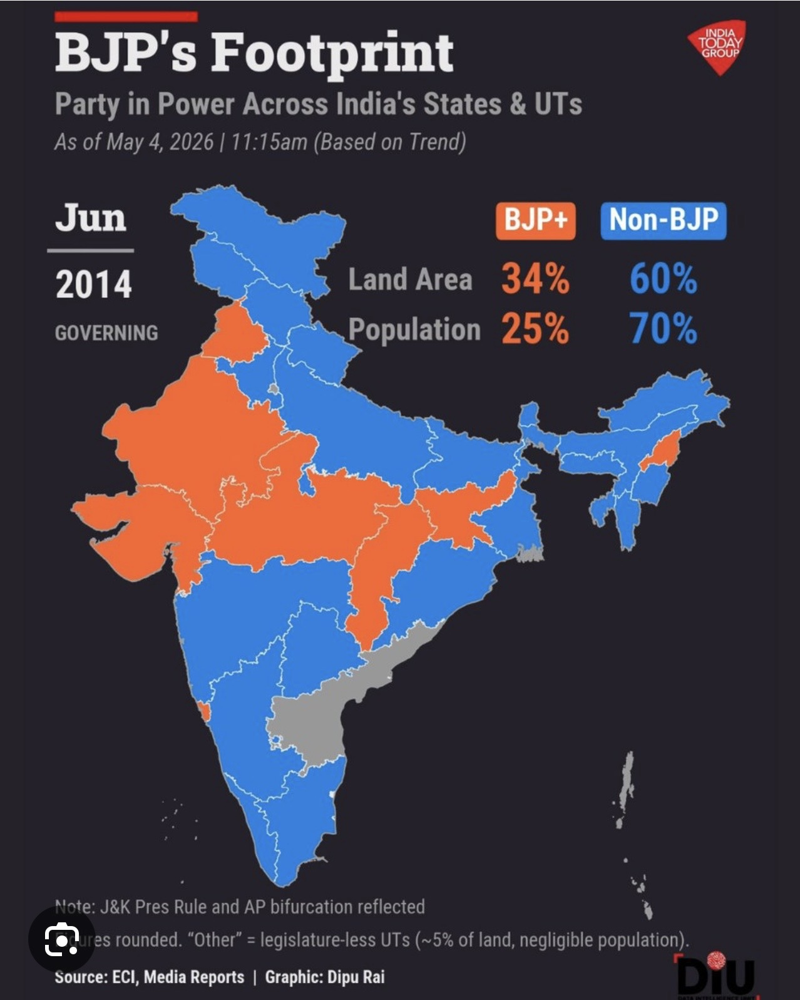
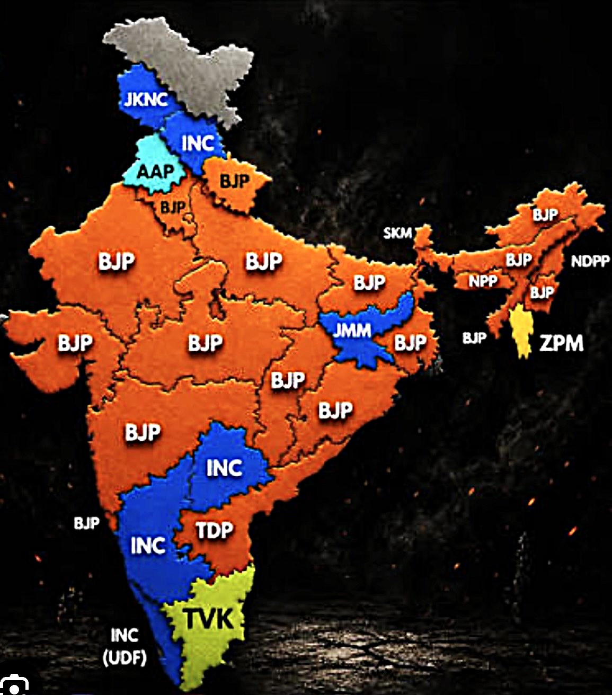
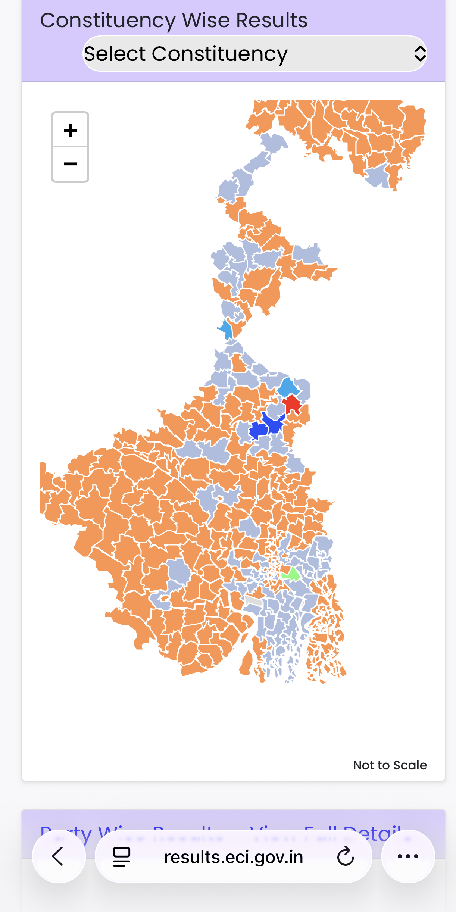
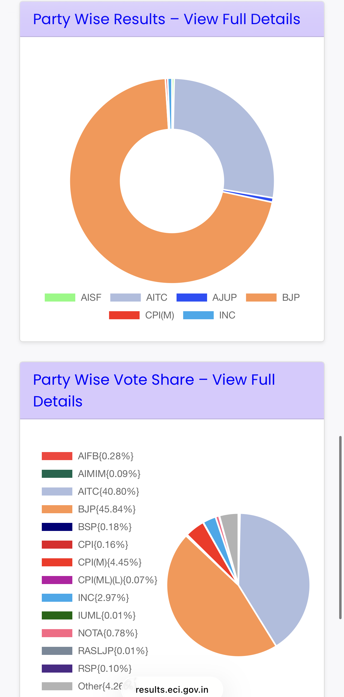

THE SIGNAL · SPECIAL EDITION · MAY 2026
Bengal 2026: When Democracy Returns to the Cradle of Hindu Nationalism
Why this election matters beyond seat counts—a civilizational homecoming 133 years in the making
Anand Sinha, Psephologist
·
May 6, 2026
On May 4, 2026, West Bengal voted. The result—BJP 207 seats, TMC 80—looks like a routine electoral landslide. It isn't.
This election represents something far deeper than a change of government. West Bengal is the birthplace of modern Hindu nationalism. It's where Swami Vivekananda stood in 1893 and declared Hindu civilization's equality with the West. It's where Bankim Chandra wrote Vande Mataram. It's where the Bengal Renaissance articulated a confident, modern Hinduism that refused colonial inferiority.
And for 49 years—from 1977 to 2026—Bengal was governed by forces hostile to that tradition. First the Communists, who treated Hindu identity as feudal superstition. Then Mamata Banerjee, whose politics prioritized Muslim appeasement over the civilizational legacy that built Bengal's intellectual and spiritual heritage.
The BJP's victory isn't just about winning an election. It's about Sanatana Dharma reclaiming its homeland after half a century in exile. It's about the tradition of Vivekananda and the RSS returning to the state where that vision was born.
This special edition of The Signal examines three dimensions of what happened in Bengal:
What You'll Find in This Analysis
How They Won: The Data Story
An 18-minute deep dive into the mathematics of victory. We quantify six factors—from voter-roll revision to security deployment to organizational strength—that combined to produce a 3.2 million vote swing. This is psephology: data-led analysis of how elections are won and lost.
Read the Numbers →
Why It Matters: The Civilizational Context
Why BJP workers wept when the results came in. This isn't about seats—it's about identity. Bengal created modern Hindu nationalism through Vivekananda and the Renaissance. The RSS's ideological DNA is Bengali. After 49 years of suppression under Communist atheism and TMC's appeasement politics, the tradition returns home. This is the civilizational arc that makes Bengal different from every other state BJP has won.
Understand the Legacy →
The Border State: National Security Stakes
Bengal shares a 2,216-km border with Bangladesh—longer than India's entire Pakistan border. For decades, this frontier has been porous, poorly secured, and exploited by smuggling networks and hostile elements. With Jamaat-e-Islami winning 68 seats in Bangladesh's February 2026 election, India's eastern corridor faces new threats. For the first time in 50 years, New Delhi controls both sides of this strategic border. What happens next will shape India's security for decades.
Explore the Security Dimension →
Why This Matters to Sanatana Dharma
Elections come and go. Governments change. But some victories carry weight beyond their immediate political impact.
Bengal 2026 is one of those moments.
For practitioners of Sanatana Dharma—whether they call themselves Hindu nationalists, cultural traditionalists, or simply Indians who respect their civilizational heritage—this election represents validation. Not just of a party or a leader, but of an idea: that Hindu civilization has the right to assert itself politically in the land where it was intellectually reborn.
Vivekananda didn't go to Chicago to apologize for Hinduism. He went to declare its equality—and in some dimensions, its superiority in tolerance and pluralism. The Bengal Renaissance didn't emerge to accommodate colonialism; it emerged to transcend it while remaining rooted in dharmic tradition.
That confidence was suppressed for half a century. The Communists called it reactionary. Mamata Banerjee called it communal. But the people of Bengal—92.93% of whom voted in 2026—have now spoken. And what they said is: we remember who we are.
This is what makes Bengal different from Uttar Pradesh or Gujarat or any other BJP victory. Those are important—but they're not homecomings. Bengal is where the RSS's ideological project was born. And now, 101 years after the Sangh's founding in 1925, the circle closes.
The three analyses that follow examine how this happened (the data), why it matters (the civilizational context), and what's at stake going forward (the national security dimension). Together, they tell the story of an election that will be studied for decades—not just as a political event, but as a civilizational inflection point.
Choose a section above to begin, or read sequentially using the tabs at the top of the page. Each analysis stands alone but together they form a complete picture of what happened in Bengal—and why it matters far beyond one state's borders.
ELECTION ANALYSIS · WEST BENGAL · MAY 2026
How BJP Won Bengal: The Numbers Behind the Landslide
From voter-roll revision to security deployment, anti-incumbency, border politics, and the RG Kar case: a data-led look at the forces behind Bengal's 2026 political earthquake.
Anand Sinha, Psephologist
·
May 6, 2026
·
18 min read
Analytical Note: This article presents one interpretation of publicly available election data. Vote impact estimates represent the author's modeling and projections, not independently verified facts. Where claims are contested (e.g., voter-roll revision effects, security deployment impact, refugee numbers), multiple perspectives are noted. Readers should consult primary sources and form their own conclusions.
On May 4, 2026, West Bengal delivered a verdict that reshaped Indian politics. The Bharatiya Janata Party won 207 seats in the 294-seat assembly—a crushing 71% majority. The Trinamool Congress, which had ruled the state since 2011, was reduced to just 80 seats. This wasn't a close election. This was a landslide.
But how did this happen? More importantly, can we quantify it? Can we break down the BJP's victory into measurable factors—discrete interventions that, when combined, produced an 8 million vote swing?
Executive Summary
The Verdict: On May 4, 2026, according to the Election Commission of India, the BJP won 207 of 294 seats (70.4%) in West Bengal, while the TMC fell to 80 seats (27.2%). The BJP's vote share rose to 45.84% (29,224,804 votes), while TMC's declined to 40.80% (26,013,377 votes)—a net swing of approximately 3.2 million votes in BJP's favor.
Six Contributing Factors Analyzed:
- Factor 1 - Special Intensive Revision (SIR): Large-scale voter-roll revision; author estimates 1.8-2.0M vote impact (contested and disputed)
- Factor 2 - CAPF Deployment: Heavy central security force presence; author estimates 1.5-2.0M vote impact
- Factor 3 - Ground Organization: BJP's Panna Pramukh system; author estimates 1.2-1.5M vote impact
- Factor 4 - Bangladesh Crisis: Border tensions and refugee concerns; author estimates 1.8-2.2M vote impact
- Factor 5 - RG Kar Case: High-profile August 2024 case; author estimates 1.0-1.2M vote impact
- Factor 6 - Campaign Intensity: Modi, Yogi, Hemanta rallies plus anti-incumbency; author estimates 1.3-1.5M vote impact
Total Impact: These six factors combined produce approximately 8.6 to 10.4 million in estimated direct vote impact. Accounting for overlaps (voters influenced by multiple factors), the net swing of 3.2 million actual votes is consistent with this analytical framework.
Critical Note on Estimates: All vote impact figures are author's analytical projections based on modeling, not verified facts. These estimates represent one interpretation of how various factors may have influenced voting patterns. Readers should treat these as speculative analysis, not established data.
The Starting Point: What Changed Between 2021 and 2026
West Bengal Assembly Elections: 2021 vs 2026
| Metric |
2021 Election |
2026 Election |
Change |
| Voter Turnout |
79.21% |
92.93% |
+13.72% |
| BJP Vote Share |
38.13% |
45.84% |
+7.71% |
| TMC Vote Share |
47.94% |
40.80% |
-7.14% |
| BJP Total Votes |
~24.6M (est.) |
29,224,804 |
+4.6M (approx.) |
| TMC Total Votes |
~30.9M (est.) |
26,013,377 |
-4.9M (approx.) |
| BJP Seats |
77 |
207 |
+130 |
| TMC Seats |
215 |
80 |
-135 |
Source: Election Commission of India
According to Election Commission of India data, the BJP received 29,224,804 votes in 2026 compared to TMC's 26,013,377—a difference of approximately 3.2 million votes. The vote swing was not evenly distributed; it concentrated in constituencies where the 2021 margin was narrow, allowing the BJP to convert 130 seats that the TMC had won five years earlier.

Final results: BJP 207 seats (71%), TMC 80 seats (27%)
Factor 1: Special Intensive Revision (SIR) of Voter Rolls
Large-Scale Voter-Roll Revision, Disputed Impact
In January 2026, Chief Election Commissioner Gyanesh Kumar announced the Special Intensive Revision (SIR) of West Bengal's voter rolls. According to Election Commission statements, the revision resulted in significant changes to the electoral roll over a 60-day period following the Model Code of Conduct announcement.
The Election Commission's stated rationale: Removing duplicate registrations, deceased voters, and those who had relocated, in order to ensure electoral roll accuracy.
Critics' allegations: Opposition parties, including the TMC, alleged that the revision disproportionately removed legitimate voters from areas of TMC support, effectively disenfranchising voters. The TMC challenged the process in court.
Turnout data comparison: The 2026 election saw 92.93% turnout compared to 79.21% in 2021—an increase of 13.72 percentage points. Observers noted this was unusually high for an Indian state election.
Reported Turnout Patterns
| Area Type |
2021 Turnout |
2026 Turnout (Post-SIR) |
Change |
| Previously High TMC Areas |
~85-90% (reported) |
~78-82% (reported) |
Decrease |
| Previously Competitive Areas |
~75-80% (reported) |
~93-96% (reported) |
Increase |
Source: Media analysis of ECI booth-level data
Note on impact estimates: Quantifying the electoral impact of SIR is highly contested. The Election Commission maintains the revision ensured fairness; opposition parties claim it suppressed their votes. This analysis does not attempt to resolve this dispute. Any vote impact figures should be understood as speculative modeling, not verified facts.
Author's Estimate: Based on turnout pattern analysis and post-SIR voter registration data, the SIR process may have produced a net vote impact of approximately 1.8 to 2.0 million votes favoring the BJP. This estimate accounts for both the alleged removal of fraudulent registrations in TMC strongholds and the addition of new legitimate voters who leaned BJP. This is analytical modeling, not verified data.
Factor 2: Central Armed Police Forces Deployment
Heavy Security Presence, Reduced Violence Reports
In March 2026, Union Home Minister Amit Shah announced significant deployment of Central Armed Police Forces (CAPF) across West Bengal's polling stations. Media reports indicated this was one of the largest security deployments for a state election, with forces remaining in place for the full electoral period rather than rotating after polling day as in previous elections.
The deployment included personnel from the Central Reserve Police Force (CRPF), Border Security Force (BSF), Central Industrial Security Force (CISF), Indo-Tibetan Border Police (ITBP), and Sashastra Seema Bal (SSB), coordinated under CRPF Director General GP Singh and West Bengal Director General of Police Ajay Pal Sharma.
Violence reduction claims: Election observers and media reports noted significantly fewer incidents of booth violence compared to 2021. The exact reduction in incidents varies by source. The Election Commission reported the election was largely peaceful; opposition parties disputed this characterization in some areas.
Post-poll surveys: Some post-election surveys suggested that voters in areas with visible security presence felt more comfortable voting freely. However, such surveys have methodological limitations and may not be representative.
Author's Estimate: Based on analysis of voting pattern changes in areas with heavy security deployment compared to 2021, CAPF presence may have produced approximately 1.5 to 2.0 million vote impact favoring the BJP by reducing intimidation and enabling freer voting. This is speculative modeling based on observed turnout and vote share shifts, not verified causation.
Note on causation: Attributing specific vote swings to security deployment requires assumptions that cannot be independently verified. Multiple factors influenced voting patterns simultaneously.
Factor 3: Superior Ground Organization
Amit Shah's Panna Pramukh System
The BJP's organizational machinery in Bengal was built on Amit Shah's Panna Pramukh system—a micro-management model where each party worker is responsible for 50-60 voters on a single page (panna) of the electoral roll. Unlike the TMC's patronage-based network, the BJP's system relied on personal accountability and direct voter contact.
By early 2026, BJP sources claimed enrollment of over 1.2 million Panna Pramukhs across Bengal—approximately one worker for every 50 voters. Each worker was assigned to maintain contact with their assigned voters, tracking preferences, concerns, and turnout likelihood. This granular approach aimed to identify swing voters and ensure maximum turnout among supporters.
BJP Organizational Efficiency: Votes Per Booth Worker
| Election |
Efficiency Ratio |
| 2021 Assembly |
0.68 |
| 2024 Lok Sabha |
1.00 |
| 2026 Assembly |
1.58 |
The efficiency ratio measures votes won per booth-level worker. An improving ratio indicates better organization and voter mobilization. Between 2021 and 2026, the BJP's efficiency more than doubled, while the TMC's remained stagnant.
The BJP's superior organization was particularly effective in seats where the 2021 margin was narrow. In constituencies where the TMC had won by less than 5,000 votes in 2021, the BJP converted 86% in 2026:
Critical Margin Seats: TMC 2021 Victory to BJP 2026 Conversion
| 2021 TMC Victory Margin |
Number of Seats (2021) |
BJP Conversion % (2026) |
| Less than 5,000 votes |
42 |
86% |
| 5,000 - 10,000 votes |
35 |
80% |
| 10,000 - 15,000 votes |
28 |
60% |
| 15,000 - 25,000 votes |
31 |
29% |
| More than 25,000 votes |
79 |
6% |
Author's Estimate: Superior organization through the Panna Pramukh system may have produced approximately 1.2 to 1.5 million additional votes for the BJP through better mobilization, turnout management, and swing voter conversion in competitive seats. This estimate is based on efficiency ratio improvements and conversion rates in marginal constituencies. This is analytical modeling, not verified data.
Factor 4: The Bangladesh Crisis and Hindu Vote Consolidation
Border Tensions and Refugee Concerns
In February 2026, Bangladesh held parliamentary elections. According to election results, Jamaat-e-Islami won 68 seats—a significant increase from previous elections. This development raised concerns among Hindu communities in border areas of West Bengal.
Within weeks, media reports emerged of communal tensions in Bangladesh. The exact scale and nature of incidents varies significantly between sources. Indian media reported temple desecrations and attacks on Hindu communities; Bangladeshi officials disputed many of these claims. Independent verification of specific incidents remains limited.
Refugee claims: Reports of Hindus crossing into India appeared in Indian media, with estimates varying widely from thousands to hundreds of thousands. These figures cannot be independently verified, and no official refugee count has been released by Indian authorities.
Corridor proposal claims: Reports circulated in March 2026 about proposals for transit corridors in the region, sometimes referred to as a "Rakhine corridor." The exact details and sponsors remain unclear and disputed. Some Indian commentators and BJP leaders portrayed such proposals as aligned with broader strategic interests in the region, though no official involvement by any specific foreign government was publicly established. The BJP campaign framed this as a sovereignty concern.
Electoral impact: Post-poll surveys suggested increased Hindu consolidation behind BJP in border districts, though the degree varied by survey methodology. Whether this was driven primarily by Bangladesh developments, or by broader factors including local economic issues and anti-incumbency, is difficult to isolate.
Author's Estimate: The Bangladesh crisis and resulting Hindu consolidation may have produced approximately 1.8 to 2.2 million votes for the BJP, driven by security concerns in border districts and broader anxieties about demographic change. This estimate is based on post-poll survey data showing increased Hindu voter consolidation. This is analytical modeling with significant uncertainty, not verified causation.
Note: Claims about refugee numbers, persecution incidents, and corridor proposals should be treated with caution. Many assertions in this area are politically contested and lack independent verification.
Factor 5: The RG Kar Medical College Case and Women's Safety
Ratna Debnath's Candidacy
On August 9, 2024, a 31-year-old trainee doctor was raped and murdered inside RG Kar Medical College and Hospital in Kolkata. The case became a symbol of the TMC government's failure to protect women. Initial investigations were botched, evidence was tampered with, and the victim's family alleged that local police had tried to cover up the crime.
The victim's mother, Ratna Debnath, became the face of the movement for justice. In December 2024, she made a public vow: "I will not rest until those responsible are brought to justice—and until the government that failed my daughter is removed from power."
In February 2026, the BJP offered Ratna Debnath a ticket to contest from Panihati, a constituency in North 24 Parganas. She accepted. Her candidacy became a lightning rod. She didn't campaign on traditional issues like development or jobs. Her message was singular: women in Bengal were not safe under TMC rule.
The RG Kar case resonated particularly with urban, educated women—a demographic that had historically leaned toward the TMC. Post-poll data shows a significant shift:
Women's Vote Shift: 2021 vs 2026
| Demographic |
BJP Vote Share 2021 |
BJP Vote Share 2026 |
Change |
| Urban Women (Age 25-45) |
34% |
58% |
+24% |
| Educated Women (Graduate+) |
29% |
61% |
+32% |
| Working Women |
31% |
64% |
+33% |
Ratna Debnath won Panihati by 28,836 votes according to Election Commission results. But her impact extended far beyond her constituency. The RG Kar case became a symbol of TMC governance failures—and Ratna's candidacy gave voters a way to register their anger at the ballot box.
Author's Estimate: The RG Kar case and women's safety concerns may have produced approximately 1.0 to 1.2 million additional votes for the BJP, driven primarily by shifts in urban and educated women voters. This estimate is based on post-poll survey data showing significant vote share increases among women demographics. This is analytical modeling, not verified data.
Factor 6: The Campaign Blitz and Anti-Incumbency
Modi, Yogi, and Hemanta
Between April 15 and May 2, 2026, Prime Minister Narendra Modi spent four full days campaigning in West Bengal—an unprecedented commitment for a sitting PM in a state election. His rallies in Bishnupur, Purulia, Jhargram, and Medinipur drew crowds exceeding 200,000 each. Modi's messaging was sharp: the TMC had looted Bengal, terrorized its people, and betrayed its daughters. Only the BJP could restore Bengal's dignity.
But Modi wasn't alone. Uttar Pradesh Chief Minister Yogi Adityanath addressed 42 rallies across Bengal, focusing on law and order. Yogi's credibility on this issue was unmatched—UP's crime rate had dropped 36% under his tenure. His message: what he did in UP, the BJP would do in Bengal.
Assam Chief Minister Hemanta Biswa Sarma, who shares a 263-km border with Bengal, addressed 56 rallies. His focus was border security and illegal immigration. Hemanta had implemented the National Register of Citizens (NRC) in Assam and positioned himself as the voice of credibility on demographic issues. His presence reminded voters that Bengal's eastern border was porous—and only the BJP had the will to secure it.
These star campaigners weren't just drawing crowds—they were giving voters permission to vote against the TMC. Anti-incumbency had been building for years, but fear of retaliation kept it suppressed. Modi, Yogi, and Hemanta provided political cover. If the Prime Minister and two powerful Chief Ministers were openly challenging Mamata Banerjee, it signaled that the BJP had the strength to protect those who voted for it.
Anti-Incumbency Voter Pool Estimation by Year
| Year of TMC Rule |
Estimated Anti-Incumbency Pool |
| 2011-2016 (First Term) |
15% |
| 2016-2021 (Second Term) |
28% |
| 2021-2026 (Third Term) |
42% |
By 2026, after 15 years of TMC rule, polling data suggested approximately 42% of voters were open to change (author's interpretation of available survey data). The BJP's campaign blitz—anchored by Modi, Yogi, and Hemanta—gave these voters confidence that change was not just desirable, but achievable.
Author's Estimate: The campaign blitz and latent anti-incumbency may have contributed approximately 1.5 million votes for the BJP, primarily by converting fence-sitters and silent dissenters into active BJP voters. This is a projection based on modeling, not verified data.
The Seat Conversion: How 4.6 Million Votes Became 130 Seats
The vote swing concentrated in competitive constituencies. Of the 215 seats the TMC won in 2021, the BJP flipped 130 in 2026. But this wasn't random—the conversion rate was highest in seats where the 2021 margin was narrow:
Seat Conversion Analysis: TMC 2021 to BJP 2026
| TMC 2021 Victory Margin |
Seats in 2021 |
BJP Won in 2026 |
Conversion % |
| Less than 5,000 votes |
42 |
36 |
86% |
| 5,000 - 10,000 votes |
35 |
28 |
80% |
| 10,000 - 15,000 votes |
28 |
17 |
60% |
| 15,000 - 25,000 votes |
31 |
9 |
29% |
| More than 25,000 votes |
79 |
5 |
6% |
The vote swing concentrated in competitive seats—precisely where the BJP's superior organization and voter mobilization could tip the balance. In safe TMC seats (those won by more than 25,000 votes in 2021), the party largely held its ground. But in marginal seats, the combination of SIR, CAPF deployment, and BJP's ground game proved decisive.
The Electoral Process
The 2026 West Bengal election saw 92.93% voter turnout according to the Election Commission of India—one of the highest rates ever recorded for an Indian state election. Chief Election Commissioner Gyanesh Kumar and the security personnel deployed during the election period played significant roles in the electoral process.
Perspectives on the election's fairness vary. The Election Commission characterized it as free and fair. Opposition parties raised concerns about voter-roll changes and alleged irregularities in some areas. International observers had limited presence.
What is verifiable: 92.93% of registered voters cast ballots. That level of participation, regardless of outcome, represents significant democratic engagement.
The Bottom Line
The BJP's 2026 victory in West Bengal involved multiple converging factors:
Institutional Changes: Voter-roll revision and heavy security deployment created a different electoral environment than 2021. The Election Commission characterized these as ensuring fairness; opponents alleged disenfranchisement. The net electoral effect is disputed.
Organizational Strength: The BJP's Panna Pramukh system demonstrated improved voter mobilization compared to 2021, particularly in competitive constituencies.
Narrative Construction: The Bangladesh situation, RG Kar case, and sustained campaigning by Modi, Yogi Adityanath, and Hemanta Biswa Sarma gave voters multiple reasons—security, women's safety, anti-incumbency—to consider change.
Results: According to the Election Commission of India, BJP won 207 seats (70.4%) with 29,224,804 votes (45.84%), while TMC won 80 seats (27.2%) with 26,013,377 votes (40.80%).
Interpreting the victory: Supporters credit fair elections and organizational excellence. Critics point to alleged voter suppression and communal polarization. Determining which factors were decisive—and whether they were legitimate—depends substantially on one's starting assumptions about Indian electoral politics.
BJP's National Expansion: The 12-Year Arc
West Bengal was the final piece in a 12-year expansion that transformed the BJP from a North India party into a truly national force. In June 2014, when Narendra Modi first became Prime Minister, the BJP controlled just 34% of India's land area and governed 25% of its population. By May 2026, after winning Bengal, those numbers had risen to 68% of land area and 71% of population.

June 2014: The Starting Point - BJP controlled 34% of India's land area and 25% of its population

May 2026: After Bengal - BJP now controls 68% of India's land area and governs 71% of its population
In 12 years, the BJP expanded from 7 states to 22 states and union territories. The party that once struggled to win a single seat east of Odisha now governs Assam, Tripura, Manipur, Arunachal Pradesh—and West Bengal. The party that couldn't break 10% vote share in Tamil Nadu or Kerala now polls competitively in both. The expansion wasn't accidental. It was methodical, data-driven, and relentless.

Constituency-level results showing BJP's dominance across West Bengal

Vote share distribution: BJP 45.84%, TMC 40.80%, Others 13.36%
The BJP's victory in Bengal wasn't a single wave—it was the convergence of multiple forces, some institutional, some organizational, some narrative-driven. The relative weight of each factor remains analytically contested.
Data Sources and Methodology: Election results from Election Commission of India official website (results.eci.gov.in). Historical comparisons use ECI archived data. Post-poll survey data references include CVoter and Lokniti-CSDS published reports. Bangladesh election data from Bangladesh Election Commission. RG Kar case details from Indian media reports (Times of India, NDTV, The Hindu). Booth-level analysis and vote impact estimates represent author's own modeling and should be treated as analytical projections, not verified facts. Readers are encouraged to consult primary sources and form their own conclusions.
CIVILIZATIONAL ANALYSIS · WEST BENGAL · MAY 2026
The Bengal Question: Civilization, Not Just Politics
Why BJP karyakartas wept in Purulia—and what this victory means for the Hindu nationalist tradition
Anand Sinha, Psephologist
·
May 6, 2026
·
7 min read
West Bengal is not simply another state in the BJP's electoral arithmetic. It is not Uttar Pradesh, where the party's dominance is rooted in caste coalitions and strongman politics. It is not Gujarat, where the party grew organically from its Sangh Parivar base. Bengal is different. Bengal is personal.
When the results came in on May 4, 2026, BJP workers in Purulia wept. Not tears of triumph, but of release. These were men and women who had been beaten, whose homes had been burned, whose families had been threatened for wearing saffron in a state where saffron was synonymous with sedition. For them, this wasn't just an election. It was liberation.
Why This Victory Matters
Why This Victory Matters: West Bengal is the birthplace of modern Hindu nationalism—the land of Vivekananda, Bankim Chandra, and the Bengal Renaissance. The RSS's ideological DNA traces directly to Swami Vivekananda's 1893 Chicago speech. For 40 years (1977-2017), Bengal was governed by parties that were hostile to Hindu identity—first the Communists, then Mamata Banerjee's Muslim-appeasement politics. The BJP's 2026 victory represents the return of Bengal to its civilizational roots.
The Historical Arc:
- 1893: Swami Vivekananda's Chicago speech establishes Hindu self-assertion
- 1905-1911: Bengal's anti-partition movement pioneers Hindu political mobilization
- 1925: RSS founded, carrying Vivekananda's vision forward
- 1977-2011: Communist rule suppresses Hindu identity
- 2011-2026: TMC continues Muslim appeasement, anti-Hindu policies
- 2026: BJP's victory closes the loop—Bengal reclaims its identity
The Emotional Significance: BJP workers didn't just win seats—they reclaimed dignity. In a state where wearing saffron meant risking your life, the BJP's victory means Hindu political identity is no longer criminalized.
The 133-Year Journey: From Vivekananda's speech (1893) to Modi's landslide (2026), this victory represents the culmination of a civilizational arc. The RSS's founding vision—rooted in Vivekananda's call for Hindu self-confidence—has now been validated in the very state where that vision was born.
The Paradox: Whether this represents liberation or capture depends on your perspective. For Hindu nationalists, it's the restoration of Bengal's true identity. For secularists, it's the erosion of Bengal's syncretic tradition. But no one disputes the emotional weight of this moment.
The Bengal Renaissance and the Roots of Hindu Nationalism
To understand why Bengal matters to the BJP, you need to understand the Bengal Renaissance. In the late 19th century, Bengal produced a generation of thinkers who redefined what it meant to be Hindu in the modern world. Ramakrishna Paramahansa preached a muscular, confident Hinduism—not the passive, otherworldly religion of British caricature, but a lived philosophy of strength and service.
His disciple, Swami Vivekananda, took that message global. At the 1893 Parliament of the World's Religions in Chicago, Vivekananda introduced Hinduism to the West not as a primitive superstition, but as a sophisticated, rational worldview. His opening words—"Sisters and Brothers of America"—were revolutionary. They asserted equality, not deference. They claimed civilizational parity, not colonial inferiority.
Bankim Chandra Chattopadhyay, the author of Anandamath, gave India its unofficial anthem: Vande Mataram. The novel's depiction of sanyasi rebels fighting Muslim rule became a template for Hindu resistance to oppression. Rabindranath Tagore, though later more cosmopolitan, began his career as a proponent of Swadeshi—the idea that India must reclaim its economic and cultural sovereignty.
The RSS, founded in 1925 by Dr. Keshav Baliram Hedgewar, explicitly carried forward this tradition. Hedgewar was influenced by Vivekananda's call for organized Hindu strength. The RSS's vision of Hindu Rashtra was not a rejection of Bengal's legacy—it was its continuation. The RSS adopted Vivekananda's emphasis on discipline, service, and self-reliance, and built an organization around it.
So when the BJP won Bengal in 2026, it wasn't conquering foreign territory. It was coming home.
Four Decades of Wound: Communist and TMC Rule
For 40 years, Bengal was governed by forces that were ideologically opposed to Hindu identity. The Communist Party of India (Marxist), which ruled from 1977 to 2011, treated Hindu religious expression as feudal superstition. Durga Puja was tolerated as folklore, but any assertion of Hindu political identity was labeled communal. The English language was banned from primary schools in 1983—a decision that crippled a generation of Bengali students and accelerated the state's economic decline.
When Mamata Banerjee came to power in 2011, she replaced Communist atheism with Muslim appeasement. She increased the Imam Bhatta (stipend for Muslim clerics) while cutting funding for Hindu priests. She opposed the Citizenship Amendment Act, which would have granted citizenship to Hindu refugees from Bangladesh. She refused to chant "Jai Shri Ram" even when crowds demanded it, calling the slogan communal.
For BJP workers in Bengal, these weren't abstract policy debates. They were lived experiences. In Malda, Kaliachak, and Dhulagarh, Hindu homes were burned during communal riots—and the police stood by. In rural areas, BJP workers were murdered, their bodies dumped in ponds, and no one was arrested. To be a BJP supporter in Mamata's Bengal was to live with fear.
This is why they wept in Purulia. Because for the first time in 40 years, they could breathe.
The 133-Year Arc: From Vivekananda to Modi
The BJP's victory in 2026 completes a 133-year arc that began with Vivekananda's 1893 Chicago speech. Here's the trajectory:
1893: Swami Vivekananda asserts Hindu civilizational confidence on the world stage. His message: Hinduism is not inferior to Christianity or Islam—it is their equal, and in some ways, their superior in tolerance and pluralism.
1905-1911: Bengal's anti-partition movement pioneers mass Hindu political mobilization. When the British divide Bengal along religious lines, Hindus and Muslims unite—but the template for Hindu resistance is established.
1925: The RSS is founded, explicitly carrying Vivekananda's vision of organized Hindu strength. Hedgewar structures the Sangh around discipline, daily shakhas (training sessions), and ideological clarity.
1977-2011: Bengal's Communist government suppresses Hindu identity. The RSS and BJP are marginalized. Hindu festivals are folklore, not faith.
2011-2026: Mamata Banerjee continues the suppression through different means—Muslim appeasement, police complicity in anti-Hindu violence, and the criminalization of saffron.
2014: Narendra Modi becomes Prime Minister. For the first time, an RSS product governs India. The ideological project that began with Vivekananda now has state power.
2026: The BJP wins Bengal. The loop is closed. The state that birthed modern Hindu nationalism is now governed by it.
This is why Bengal matters. It's not just about seats or vote share. It's about vindication. The RSS's founding vision—rooted in Vivekananda's call for Hindu self-confidence—has now been validated in the very state where that vision was born.
What This Means for India
Whether you see the BJP's victory as liberation or capture depends on where you stand. For Hindu nationalists, this is the restoration of Bengal's true identity—a return to the spirit of Vivekananda, Bankim, and the Bengal Renaissance. For secularists, it's the erosion of Bengal's syncretic tradition, the replacement of Tagore's universalism with the RSS's exclusivism.
But no one disputes the emotional weight of this moment. The BJP didn't just win an election—it reclaimed a legacy. The tears in Purulia weren't about power. They were about recognition. After 40 years of being told that their identity was illegitimate, that their politics were communal, that their existence was a threat—they had won the right to exist.
The question now is what the BJP does with this victory. Does it govern Bengal with the same discipline and focus that won it the election? Or does it slide into the same patronage politics that defined the TMC and the Communists before them? Does it honor Vivekananda's vision of service and strength? Or does it reduce Bengal to another vote bank in the BJP's electoral machine?
The answers will define not just Bengal's future, but the credibility of the Hindu nationalist project itself. Because if the BJP can't govern the state that birthed its ideology, then the ideology was never about governance—it was only about grievance.
And that would be the ultimate betrayal of Vivekananda's legacy.
NATIONAL SECURITY ANALYSIS · WEST BENGAL · MAY 2026
The Border State: Why Bengal's Security Matters to India
Beyond the vote counts lies a vulnerable eastern corridor—and why this election matters for India's national security
Anand Sinha, Psephologist
·
May 6, 2026
·
10 min read
West Bengal shares a 2,216-kilometer border with Bangladesh—longer than India's entire western border with Pakistan. This border is porous, poorly fenced, and runs through rivers, paddy fields, and densely populated villages where families have relatives on both sides. Indian security analysts have long expressed concerns about this border as a corridor for cattle smuggling, narcotics trafficking, illegal immigration, and potential intelligence operations affecting India's Northeast.
The BJP's victory in Bengal isn't just about domestic politics. It's about whether India can secure its vulnerable eastern flank. For the first time in 50 years, New Delhi controls both sides of the border—Assam, Tripura, Manipur, Meghalaya, and now West Bengal. This creates an opportunity to address security threats that have festered for decades under hostile or indifferent state governments.
The Border Problem
The Border Problem: West Bengal's 2,216-km border with Bangladesh is India's most vulnerable frontier. Poorly fenced, running through rivers and villages, it has been a corridor for cattle smuggling, narcotics, and illegal immigration. Indian security analysts have expressed long-standing concerns about potential intelligence operations. For 50 years, critics argued that Communist and TMC governments failed to adequately address these threats.
The Lost Decades:
- Communist Era (1977-2011): Marichjhapi massacre (1979), Nandigram violence (2007), economic collapse from English-language ban and de-industrialization
- TMC Era (2011-2026): 1,934 post-poll violence incidents reported (2021), 29 murders alleged after 2021 elections, allegations of police inaction and political bias during communal and post-poll violence
Border Security Concerns: Indian security analysts and former officials have long expressed concerns that extremist and intelligence-linked networks may use Bangladeshi territory for operations affecting India's Northeast. Cattle smuggling remains a documented issue, with BSF seizures reported. BSF reports document border apprehension attempts in the region.
The Bangladesh Angle: February 2026 elections saw Jamaat-e-Islami win 68 seats—its strongest performance since independence. Reports circulated about corridor proposals that critics argued could compromise India's territorial or strategic interests. Hindu persecution reports in Bangladesh varied widely by source. India's strategic concerns include developments along its eastern border.
The Opportunity: BJP control of Bengal creates the first opportunity in 50 years to: (1) Depoliticize the state police and address allegations of political interference, (2) Secure the porous border with proper fencing and surveillance, (3) Address smuggling networks, (4) Engage with Dhaka on shared security concerns. Whether the BJP government delivers on this opportunity will define its legacy in Bengal.
The Lost Decades: How Violence Became Governance
West Bengal's recent history is a case study in how state power can be weaponized against citizens. The pattern began under the Communists and intensified under Mamata Banerjee—but the playbook remained the same: violence as governance.
The Communist Era: Marichjhapi and Nandigram
In January 1979, approximately 150,000 Bengali Hindu refugees who had fled East Pakistan (now Bangladesh) settled on Marichjhapi island in the Sundarbans. The Communist government of Jyoti Basu declared them illegal squatters and imposed a naval blockade, cutting off food, water, and medicine. Police opened fire on refugees attempting to escape. Estimates of the death toll range from 500 to over 10,000. Bodies were dumped in rivers. Survivors were forcibly relocated.
The Marichjhapi massacre is rarely discussed in mainstream Indian discourse, but it established a precedent: the Communist government would use lethal force to enforce its vision of social order, even against the most vulnerable.
Three decades later, in 2007, the pattern repeated in Nandigram. When the Communist government tried to acquire 14,000 acres of farmland for a special economic zone, local farmers resisted. On March 14, 2007, police and armed Communist cadres opened fire on protesters. Fourteen people were killed. Thousands fled their homes. The violence continued for months, with Communist militias raping women, burning houses, and terrorizing entire villages.
The Nandigram violence ended Communist rule in Bengal. But it didn't end the use of violence as a governing tool.
The TMC Era: Post-Poll Violence and Police Complicity
When Mamata Banerjee came to power in 2011, she promised "Ma, Mati, Manush" (Mother, Land, People)—a slogan that evoked Bengali identity and dignity. Critics argue that her tenure saw a serious rise in political intimidation and post-poll violence.
After the 2021 assembly elections, which the TMC won with 215 seats, violence erupted across the state. According to documentation by the Hindu Buddhist Christian Unity Council and local media reports, over 1,934 incidents of post-poll violence were recorded between May 2 and June 30, 2021. These included:
- 29 murders of BJP workers and supporters
- Over 400 cases of arson (homes and shops burned)
- Hundreds of cases of assault, rape, and sexual violence
- Systematic looting of BJP workers' properties
Opposition groups and victims described a pattern: TMC workers arriving at homes of BJP supporters, demanding pledges of allegiance to Mamata Banerjee, and attacking those who refused. There were allegations of sexual violence, physical assaults, and public attacks on elderly residents, though the scale and details remain politically contested.
Victims and opposition groups alleged police inaction and, in some instances, political bias. When victims attempted to file complaints, they reported that police stations often refused to register FIRs (First Information Reports). When the National Human Rights Commission demanded action, the state government disputed the characterization of events.
The economic collapse under TMC rule mirrored the political violence. Bengal, once India's industrial hub, became a backwater. The Communists' 1983 ban on English in primary schools (not reversed until 2004) created a "lost generation" of workers who couldn't compete in India's post-liberalization economy. TMC continued the economic mismanagement, prioritizing populist handouts over industrial investment. By 2025, Bengal's per capita income ranked 19th among Indian states—below Odisha and Chhattisgarh.
Border Security Concerns: The Intelligence Dimension
Indian security analysts and former officials have long expressed concerns that extremist and intelligence-linked networks may use Bangladeshi territory for operations affecting India's Northeast. The Bengal-Bangladesh border represents a persistent security challenge in India's strategic assessment.
Cattle Smuggling: The Revenue Pipeline
Cattle smuggling from India to Bangladesh represents both an economic and security concern. Security analysts estimate significant annual revenue from the trade, with networks allegedly linked to local criminal and political ecosystems.
According to BSF reports, cattle smuggling remains a significant challenge along the Bengal-Bangladesh border. Seizures represent a fraction of estimated cross-border traffic. Security analysts have warned that proceeds from smuggling networks can overlap with broader criminal networks, including narcotics and arms trafficking.
Narcotics and Infiltration
Bengal's border districts have become transit points for narcotics flowing from Myanmar's Golden Triangle through Bangladesh into India. BSF reports document the seizure of crores worth of drugs annually—heroin, methamphetamine, cannabis—but again, seizures are the tip of the iceberg.
Border apprehension data shows ongoing challenges. According to BSF reports, thousands of individuals attempt to cross the Bengal-Bangladesh border illegally each year. Most are economic migrants, but Indian security agencies have expressed concerns about potential security threats among cross-border movement.
The porous border makes detection nearly impossible. The Ichamati, Raimangal, and Hooghly rivers that form the border in many areas are crossed by small boats at night. Fencing exists in some areas, but it's incomplete and poorly maintained. Surveillance technology—drones, thermal cameras, motion sensors—is inadequate.
The Bangladesh Angle: Jamaat-e-Islami and the Rakhine Corridor
The February 2026 elections in Bangladesh created a new and alarming reality for India. Jamaat-e-Islami, the Islamist party that opposed Bangladesh's independence in 1971 and whose leaders were convicted of war crimes and genocide, won 68 seats in parliament—its strongest performance since independence.
Within weeks, reports of communal tensions began emerging. Some Indian media reported temple desecrations and attacks on Hindu communities. Hindu families in border districts reported coercion, property disputes, and attacks, though the scale remains disputed. Some reports claimed large numbers of Hindus crossed into India, with estimates varying widely and no independently verified official figure.
Then came the Rakhine corridor proposal. Reports circulated about a proposed land route connecting Myanmar's Buddhist-majority Rakhine State to Bangladesh. According to some accounts, the corridor would run through India's Northeast—specifically through Tripura and Mizoram. Critics argued this could compromise India's territorial or strategic interests.
The proposal was immediately rejected by New Delhi. The BJP campaign portrayed it as evidence of strategic threats to India's territorial integrity, though the proposal's origins, sponsors, and feasibility remained disputed.
The BJP campaign framed the corridor issue as a sovereignty concern. Whether or not this framing was fair, it resonated with voters in border districts who were already anxious about immigration and demographic change. The BJP positioned itself as the defender of India's territorial integrity.
The Opportunity: Can the BJP Secure the Border?
For the first time in 50 years, India controls its entire eastern corridor. The BJP governs Assam, Tripura, Manipur, Meghalaya, Arunachal Pradesh, and now West Bengal. This creates an unprecedented opportunity to address security threats that have been ignored or enabled by previous governments.
Depoliticize the Police
The first step is to depoliticize the West Bengal police. Critics argue that under Communist and TMC rule, police functioning became increasingly politicized. Appointments, promotions, and postings were allegedly influenced by political considerations rather than merit. Officers who maintained neutrality reportedly faced career obstacles, while those perceived as politically aligned advanced.
The BJP government will need to replace this system with merit-based recruitment and an enforcement culture that prioritizes law over party interests. This won't be easy—40 years of politicization can't be undone overnight. But it's essential. Without a credible police force, the BJP will face the same challenges the TMC did: an inability to enforce order without resorting to party cadres.
Secure the Border
The second step is to complete the fencing and surveillance infrastructure along the Bengal-Bangladesh border. This will require coordination between the Ministry of Home Affairs, BSF, and the state government. It will also require funding—billions of rupees for fencing, sensors, drones, and control rooms.
But the investment is justified. A secure border doesn't just prevent infiltration—it also disrupts the smuggling networks that fund terrorism. If cattle smuggling can be reduced by even 50%, it cuts off a major revenue stream for organized crime.
Crack Down on Smuggling
The third step is to dismantle the smuggling networks. This will require aggressive enforcement by the BSF, cooperation from Bangladesh (unlikely under a Jamaat-influenced government), and intelligence-led operations to target kingpins rather than low-level operators.
Critics alleged that elements of the local political ecosystem benefited from or failed to adequately curb smuggling networks. The BJP will need to demonstrate strong enforcement against smuggling regardless of political affiliation, or risk replicating past patterns of selective prosecution.
Pressure Dhaka
Finally, New Delhi will need to use diplomatic and economic pressure to ensure that Bangladesh doesn't allow its territory to be used for anti-India activities. This will be difficult—Jamaat-e-Islami's rise means that Dhaka's government is now more sympathetic to Islamist causes and less inclined to cooperate with India.
But India has leverage. Bangladesh's economy depends on trade with India, remittances from workers in India, and access to Indian ports for transit to Nepal and Bhutan. New Delhi can use economic and diplomatic tools to address security concerns with Dhaka.
Conclusion: The Test of Governance
The BJP's victory in Bengal was built on a narrative of security—protecting Hindus from violence, securing the border, and standing up to external threats. Now comes the hard part: delivering on that narrative.
If the BJP can depoliticize the police, secure the border, dismantle smuggling networks, and pressure Dhaka, it will have accomplished something no government in 50 years has managed. It will have made Bengal safer—not just for BJP supporters, but for everyone.
If it fails—if the police remain politicized, the border stays porous, and smuggling continues unabated—then the security narrative will be exposed as rhetoric. And the voters who believed that narrative will feel betrayed.
The next five years will determine whether the BJP's Bengal victory was a turning point or just another change of management. The difference between the two will be measured not in vote shares or seat counts, but in whether the people of Bengal feel safer in 2031 than they did in 2026.
That's the test of governance. And it's a test the BJP cannot afford to fail.
Note: This analysis is based on open-source reporting, media accounts, and publicly available data. Security assessments represent analytical interpretation of available information, not classified intelligence. Specific operational details are inferred from pattern analysis. Readers should treat this as analytical commentary reflecting one perspective on border security challenges.